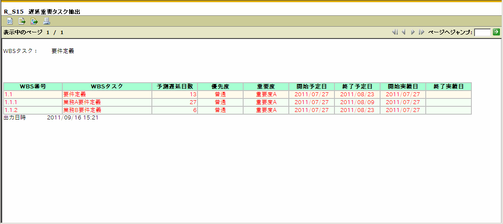

グラフパラメータ
重要度 ： 重要度Ａ
解説
遅延が予測されるWBSタスクが複数あり、WBS「1.1.1 業務要件定義」については
27日（約１ヶ月）の遅延が発生すると予測されるため、後続工程への影響があると
想定され、早急に対応する必要があることがわかります。

解説
上記グラフより、WBSタスク「要件定義」からドリルダウンすると、
遅延しているWBSタスク「要件定義」の配下のタスクの一覧が確認できます。